Contents
Apparently it must be here!
Copyright (c) 2012, 2013, 2014, 2015; Ali Akbar Eftekhari All rights reserved.
Redistribution and use in source and binary forms, with or without modification, are permitted provided that the following conditions are met:
* Redistributions of source code must retain the above copyright notice,
this list of conditions and the following disclaimer.
* Redistributions in binary form must reproduce the above
copyright notice, this list of conditions and the following
disclaimer in the documentation and/or other materials provided
with the distribution.THIS SOFTWARE IS PROVIDED BY THE COPYRIGHT HOLDERS AND CONTRIBUTORS "AS IS" AND ANY EXPRESS OR IMPLIED WARRANTIES, INCLUDING, BUT NOT LIMITED TO, THE IMPLIED WARRANTIES OF MERCHANTABILITY AND FITNESS FOR A PARTICULAR PURPOSE ARE DISCLAIMED. IN NO EVENT SHALL THE COPYRIGHT HOLDER OR CONTRIBUTORS BE LIABLE FOR ANY DIRECT, INDIRECT, INCIDENTAL, SPECIAL, EXEMPLARY, OR CONSEQUENTIAL DAMAGES (INCLUDING, BUT NOT LIMITED TO, PROCUREMENT OF SUBSTITUTE GOODS OR SERVICES; LOSS OF USE, DATA, OR PROFITS; OR BUSINESS INTERRUPTION) HOWEVER CAUSED AND ON ANY THEORY OF LIABILITY, WHETHER IN CONTRACT, STRICT LIABILITY, OR TORT (INCLUDING NEGLIGENCE OR OTHERWISE) ARISING IN ANY WAY OUT OF THE USE OF THIS SOFTWARE, EVEN IF ADVISED OF THE POSSIBILITY OF SUCH DAMAGE.
clc; clear; close all;
create a mesh and visualize it
The first part of this demo shows you how to create a mesh and visualize it. The aim of the visualization is to introduce you to the mesh structure. Here, we are going to create and visualize a 1D uniform equidistant mesh and show the cell centers with a 'o' marker and the face of each cell with a '+' marker. We start by defining the length of the domain:
L = 1.0; % length of the domain
Then we define the number of cells in the domain:
Nx = 10; % number of cells in the domain
Now we call createMesh1D, one of the functions from a group of createMesh* functions:
m = createMesh1D(Nx, L);
This function generates a structure which keeps the domain and grid information, which will be used by almost every other function in the FVMtool.
In general, 1D, 2D, 3D, 1D radial (axial symetry), and 2D cylindrical grids can be constructed. For more information, type
help createMesh2D help createMesh3D help createMeshCylindrical1D help createMeshCylindrical2D
Now, let's have a look at the structure of the created mesh:
disp(m);
MeshStructure with properties:
dimension: 1
dims: [10 1]
cellsize: [1×1 struct]
cellcenters: [1×1 struct]
facecenters: [1×1 struct]
corners: 1
edges: 1
You can easily get more information about this structure by typing
help createMesh1D
As an example, we use the position of the cell centers to visualize the domain, the cells, and the interfaces between them:
figure(2); plot(m.cellcenters.x, ones(size(m.cellcenters.x)), 'or', ... m.facecenters.x, ones(size(m.facecenters.x)), '-+b'); legend('cell centers', 'face centers'); title('Visualization of a 1D discretized domain');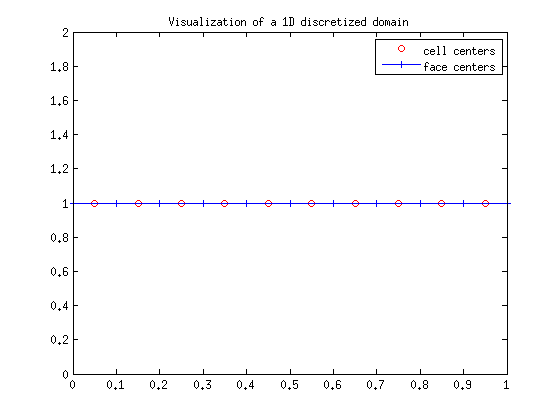
The generated figure shows a 1D domain of length 1.0 [unit], discretized into 10 cells of the same size (dx = 1/10). I'm going to assume that you are familiar with the cell-centred finite volume method, discretization, and especially handling the boundary conditions using the ghost cells. You can also generate and visualize 2D and 3D meshes. To find some examples, type:
help createMesh2D; help createMesh3D;
You will end up with the following two simple examples:
Nx = 5; Ny = 7; Lx = 10; Ly = 20; m = createMesh2D(Nx, Ny, Lx, Ly); [X, Y] = ndgrid(m.cellcenters.x, m.cellcenters.y); [Xf,Yf]=ndgrid(m.facecenters.x, m.facecenters.y); figure(3); plot(X, Y, 'or', ... Xf, Yf, '-b', Xf', Yf', '-b');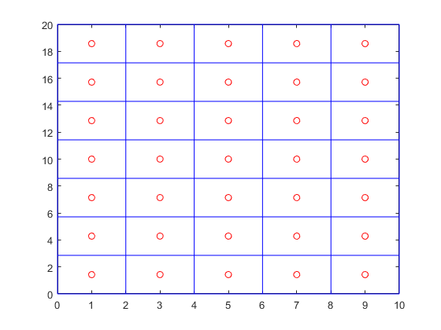
that shows you a 2D grid, and
Nx = 2; Lx = 1.0; Ny = 3; Ly = 2.0; Nz = 4; Lz = 3.0; m = createMesh3D(Nx, Ny, Nz, Lx, Ly, Lz); [X, Y, Z] = ndgrid(m.cellcenters.x, m.cellcenters.y, m.cellcenters.z); [Xf, Yf, Zf] = ndgrid(m.facecenters.x, m.facecenters.y, m.facecenters.z); figure(4); plot3(X(:), Y(:), Z(:), 'or') hold on; plot3(Xf(:), Yf(:), Zf(:), '+b') legend('cell centers', 'cell corners'); hold off;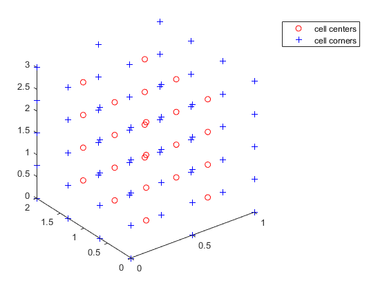
that shows a 3D grid.
Boundary condition structure
I had so many reasons to write this toy toolbox, of which, the most important one was to be able to implement different boundary conditions in the most convenient way! My final implementation makes the user able to define either a periodic boundary condition or a general boundary condition of the following form:
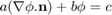
In the above equation, 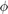 is the unknown, and a, b, and c are constants. In practice, this boundary condition equation will be discretized to the following system of algebraic equations:
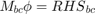
By adjusting the values of a and b, onne can easily define one of the following well-known boundary conditions:
- Neumann (a is nonzero; b is 0)
- Dirichlet (a is zero; b is nonzero)
- Robin (a and b are both nonzero)
To clarify the above explanations, let us create a boundary condition structure for a 1D mesh.
Nx = 10; % number of cells in the domain Lx = 1.0; % length of the domain m = createMesh1D(Nx, Lx); % createMesh and createMesh are identical BC = createBC(m); % creates a boundary condition structure disp(BC); % display the BC structure
BoundaryCondition with properties:
domain: [1×1 MeshStructure]
left: [1×1 struct]
right: [1×1 struct]
bottom: []
top: []
back: []
front: []
The BC structure has two substructures, i.e., left that denotes the boundary at the left side of the domain (at x=0), and right that denotes the boundary at the end of the domain (at x=Lx). Each of these substructures have three fields, i.e., a, b, and c. The default values are a=1, b=0, and c=0:
disp(BC.left); % show the values of the coefficients for the left boundary
a: 1
b: 0
c: 0
periodic: 0
There is one other field, i.e., periodic, which has a zero value. If you change it to one, then a periodic boundary condition will be created and the a, b, and c values will be ignored. clearly, you can change the above boundary condition by assigning new values to the BC.left fields. For instance, you can define a Dirichlet boundary (i.e., fixed value) with a value of 2.5 by typing
BC.left.a = 0; BC.left.b = 1; BC.left.c = 2.5;
You can define a periodic boundary condition simply by writing:
BC.left.periodic = 1;
For boundary condition structures created for 2D and 3D grids, we will have left, right, bottom, top, back, and front boundaries and thus substructures. Let me show them to you in action:
m = createMesh2D(3,4, 1.0, 2.0); BC = createBC(m); disp(BC); disp(BC.top);
BoundaryCondition with properties:
domain: [1×1 MeshStructure]
left: [1×1 struct]
right: [1×1 struct]
bottom: [1×1 struct]
top: [1×1 struct]
back: []
front: []
a: [3×1 double]
b: [3×1 double]
c: [3×1 double]
periodic: 0
Yes, that's right. a, b, and c are vectors. It means that you can have different boundary conditions for different cell faces at each boundary. For instance, I can have a Neumann boundary condition for the first cell and a Dirichlet boundary condition for the last cell at the top boundary:
BC.top.a(1) = 1; BC.top.b(1) = 0; BC.top.c(1) = 0; % zero value Neumann BC.top.a(end) =0; BC.top.b(end)=1; BC.top.c(end) = 0; % zero value Dirichlet disp('top. a b c'); % some fancy display! disp(' ---------------'); disp([BC.top.a BC.top.b BC.top.c]);
top. a b c
---------------
1 0 0
1 0 0
0 1 0
The same procedure can be followed for a 3D grid. However, a, b, and c values are 2D matrices for a 3D grid. I will discuss it in more details when we reach the practical examples. Important note: If you need to assign a boundary condition to the entire boundary, use (:) in your assignment. For instance, to define a Dirichlet boundary for the right boundary, you may write
BC.right.a(:)=0; BC.right.b(:)=1; BC.right.c(:)=0;
Solve a diffusion equation
As the first example, we solve a steady-state diffusion equation of the following formform
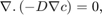
where D is the diffusivity and c is the concentration. Let me assume that we have a 1D domain, with Dirichlet boundary conditions at both boundaries, i.e., at x=0, c=1; and at x=L, c=0. First of all, we need to define our domain, discretize it, and define the boundaries at the borders.
clc; clear; % clear the screen and memory L = 0.01; % a 1 cm domain Nx = 10; % number of cells m = createMesh3D(Nx,Nx,Nx,L, L,L); % create the mesh BC = createBC(m); % construct the BC structure (Neumann by default)
Now as you may remeber, we have to switch from Neumann to Dirichlet boundary conditions
BC.left.a(:) = 0; BC.left.b(:) = 1; BC.left.c(:) = 1; % Left boundary to Dirichlet BC.right.a(:) = 0; BC.right.b(:) = 1; BC.left.c(:) = 1; % right boundary to Dirichlet
The next sep is to define the diffusivity coefficient. In this FVTool, the physical properties of the domain are defined for each cell, with the function createCellVariable
D = createCellVariable(m, 1e-5); % assign a constant value of 1e-5 to diffusivity value on each cell
However, the transfer coefficients must be known on the face of each cell. For this reason, we have a few averaging schemes implemented in the Utilities folder. For a 1D domain, we can use a harmonic mean scheme:
D_face = harmonicMean(D); % average diffusivity value on the cell faces
Now, we can convert the PDE to a algebraic system of linear equations, i.e.,
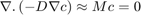
where M is the matrix of coefficient that is going to be calculated using this toolbox. The matrix of coefficient, M has two parts. The diffusion equation and the boundary conditions. They are calculated by:
M_diff = diffusionTerm(D_face); % matrix of coefficients for diffusion term [M_bc, RHS_bc] = boundaryCondition(BC); % matrix of coefficient and RHS vector for the boundary condition
A vector of right hand side values are always obtained during the discretization of the boundary conditions. Now that the PDE is discretized, we can solve it by a Matlab linear solver.
c = solvePDE(m, M_diff+M_bc, RHS_bc);
finally, the resut can be visualized:
visualizeCells(c);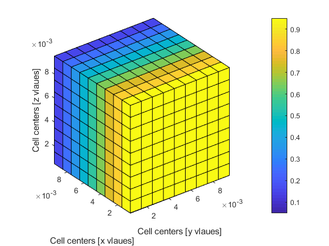
Just to get excited a little bit, only change the mesh definition command from createMesh1D(Nx,L) to createMesh2D(Nx,Nx,L,L), run the code and see what happens. For even more excitement, change it to createMesh3D(Nx,Nx,Nx,L,L,L). This is usually the way we develop new mathematical models for a physical phenomenon. Write the equation, solve it in 1D, compare it to the analytical solution, then solve it numerically in 2D and 3D for more realistic cases with heterogeneous transfer coefficients and other nonidealities (and perhaps compare it to some experimental data)
Solve a convection-diffuison equation and compare it to analytical solution
Here, I'm going to add a convection term to what we solved in the previous example. This tutorial is adopted from the fipy convection-diffusion example you can find at this address:
http://www.ctcms.nist.gov/fipy/examples/convection/index.html
The differential equation reads
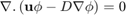
Here, 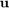 is a velocity vector (face variable) and 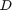 is the diffusion coefficient (again a face variable). Please see the PDF document for an explanation of cell and face variables. We use Dirichlet (constant value) boundary conditions on the left and right boundaries. It is zero at the left boundary and one at the right boundary. The analytical solution of this differential equation reads
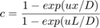
We start the code as always with some cleaning up:
clc; clear;
Then we define the domain and mesh size:
L = 1; % domain length Nx = 25; % number of cells meshstruct = createMesh1D(Nx, L); x = meshstruct.cellcenters.x; % extract the cell center positions
The next step is to define the boundary condition:
BC = createBC(meshstruct); % all Neumann boundary condition structure BC.left.a = 0; BC.left.b=1; % switch the left boundary to Dirichlet BC.left.c=0; % value = 0 at the left boundary BC.right.a = 0; BC.right.b=1; % switch the right boundary to Dirichlet BC.right.c=1; % value = 1 at the right boundary
Now we define the transfer coefficients:
D_val = 1.0; % diffusion coefficient value D = createCellVariable(meshstruct, D_val); % assign dif. coef. to all the cells Dave = harmonicMean(D); % convert a cell variable to face variable u = -10; % velocity value u_face = createFaceVariable(meshstruct, u); % assign velocity value to cell faces
Now we discretize the differential equation into a system of linear algebraic equations:
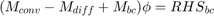
or if we use an upwind discretization scheme, we will obtain:
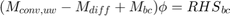
Mconv = convectionTerm(u_face); % convection term, central, second order Mconvupwind = convectionUpwindTerm(u_face); % convection term, upwind, first order Mdiff = diffusionTerm(Dave); % diffusion term [Mbc, RHSbc] = boundaryCondition(BC); % boundary condition discretization M = Mconv-Mdiff+Mbc; % matrix of coefficient for central scheme Mupwind = Mconvupwind-Mdiff+Mbc; % matrix of coefficient for upwind scheme RHS = RHSbc; % right hand side vector c = solvePDE(meshstruct, M, RHS); % solve for the central scheme c_upwind = solvePDE(meshstruct, Mupwind, RHS); % solve for the upwind scheme c_analytical = (1-exp(u*x/D_val))/(1-exp(u*L/D_val)); % analytical solution figure(5); plot(x, c.value(2:Nx+1), x, c_upwind.value(2:Nx+1), '--',... x, c_analytical, '.'); legend('central', 'upwind', 'analytical');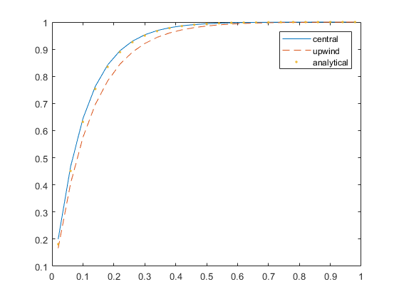
As you see here, we obtain a more accurate result by using a central difference discretization scheme for the convection term compared to the first order upwind.
solve a transient diffusion equation
This tutorial is adapted from the fipy 1D diffusion example
FiPy diffusion tutorial The transient diffusion equation reads
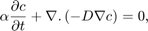
where 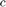 is the independent variable (concentration, temperature, etc) , is the diffusion coefficient, and 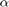 is a constant.
Once again, clean up:
clc; clear;
Define the domain and create a mesh structure
L = 50; % domain length Nx = 20; % number of cells m = createMesh1D(Nx, L); x = m.cellcenters.x; % cell centers position
Create the boundary condition structure:
BC = createBC(m); % all Neumann boundary condition structure
Switch the left and right boundaries to Dirichlet:
BC.left.a = 0; BC.left.b=1; BC.left.c=1; % left boundary BC.right.a = 0; BC.right.b=1; BC.right.c=0; % right boundary
Define the transfer coefficients:
D_val = 1; D = createCellVariable(m, D_val); Dave = harmonicMean(D); % convert it to face variables % Define alfa, the coefficient of the transient term: alfa_val = 1; alfa = createCellVariable(m, alfa_val);
Define the initial values:
c_init = 0; c_old = createCellVariable(m, c_init, BC); % initial values c = c_old; % assign the old value of the cells to the current values
Now define the time step and the final time:
dt = 0.1; % time step
final_t = 100;
Here, we first define the matrices of coefficients that will not change as we progress in time, viz. diffusion term and boundary condition:
Mdiff = diffusionTerm(Dave); [Mbc, RHSbc] = boundaryCondition(BC);
The transitionTerm function gives a matrix of coefficient and a RHS vector. The matrix of coefficient does not change in each time step, but the RHS does (see the PDF documents). Therefore, we need to call the function inside the time loop. Start the loop here:
for t=dt:dt:final_t [M_trans, RHS_trans] = transientTerm(c_old, dt, alfa); M = M_trans-Mdiff+Mbc; RHS = RHS_trans+RHSbc; c = solvePDE(m,M, RHS); c_analytical = 1-erf(x/(2*sqrt(D_val*t))); c_old = c; end
Now visualize the final results
figure(6) plot(x, c.value(2:Nx+1), 'o', x, c_analytical); xlabel('Length [m]'); ylabel('c'); legend('Numerical', 'Analytical');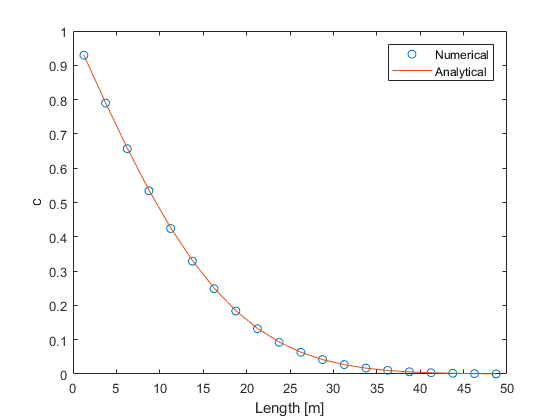
you can visualize the results from each time step by moving the plot line inside the for loop.
convection equations; different discretization schemes
If I want to highlight one special feature of this FVTool, I will point a finger on its various discretization schemes for a linear convection term, which includes central difference (second order), upwind (first order), and TVD scheme with various flux limiters.
Here, we are going to compare the performance of each scheme for solving two PDE's. First, a simple linear transient convection equation with an strange initial condition and later, we solve the well-known Burger's equation.
clc; clear; % define a 1D domain and mesh W = 1; Nx = 500; mesh1 = createMesh1D(Nx, W); x = mesh1.cellcenters.x; % define the boundaries BC = createBC(mesh1); % all Neumann BC.left.periodic=1; BC.right.periodic =1; % Initial values phi_old = createCellVariable(mesh1, 0.0, BC); phi_old.value(20:120) = 1; phi_old.value(180:400)= sin(x(180:400)*10*pi()); % initial guess for phi phi = phi_old; phiuw_old=phi_old; % initial values for upwind scheme phiuw = phi; % keep the initial values for visualization phiinit=phi_old; % velocity field u = 0.3; uf = createFaceVariable(mesh1, u); % diffusion field D = 1e-2; Df = createFaceVariable(mesh1, D); % transient term coefficient alfa = createCellVariable(mesh1,1.0); % upwind convection term Mconvuw = convectionUpwindTerm1D(uf); % define the BC term [Mbc, RHSbc] = boundaryCondition(BC); % choose a flux limiter FL = fluxLimiter('Superbee'); % solver dt = 0.001; % time step final_t = W/u; t = 0; while t<final_t t = t+dt; % inner loop for TVD scheme for j = 1:5 [Mt, RHSt] = transientTerm(phi_old, dt, alfa); [Mconv, RHSconv] = convectionTvdTerm1D(uf, phi, FL); M = Mconv+Mt+Mbc; RHS = RHSt+RHSbc+RHSconv; phi = solvePDE(mesh1, M, RHS); end [Mtuw, RHStuw] = transientTerm(phiuw_old, dt, alfa); Muw = Mconvuw+Mtuw+Mbc; RHSuw = RHStuw+RHSbc; phiuw = solvePDE(mesh1, Muw, RHSuw); phiuw_old = phiuw; phi_old = phi; end figure(7);plot(x, phiinit.value(2:Nx+1), x, phi.value(2:Nx+1), '-o', x, ... phiuw.value(2:Nx+1)); % %% method of lines: using Matlab's ODE solvers for adaptive time stepping % % % % %% solving a nonlinear PDE % % %% solving a system of linear PDE's: sequential and coupled methods % % %% solving a system of nonlinear PDE's: sequential and coupled olutions % % %% Real life cases: water-flooding in the production of oil % % %% and finally your examples? % % %